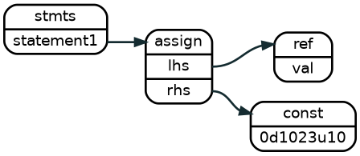
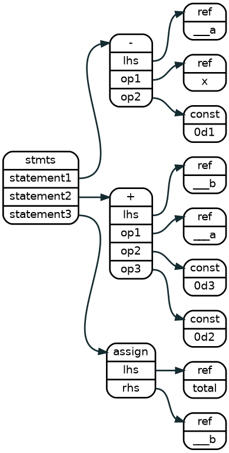

Assign Statements
Assign Trivial Constant
// Pyrope
val = 1023u10bits
// Verilog
assign val = 10`d1023
// CFG
1 0 0 SEQ0
2 1 0 0 10 = val 0d1023u10
// c++
Lnast_ntype nt_val = Lnast_type::create_ref();
Lnast_ntype nt_const = Lnast_type::create_const();
auto if_idx = lnast->add_child(parent_idx, Lnast_node(nt_if));

An assignment node sets the right hand side value to the reference pointed by the left hand side of the expression. The left hand side is always a reference. The right hand side is a reference or a constant.
Assign Simple Expression
total = (x - 1) + 3 + 2
1 0 SEQ0
2 1 0 13 - ___a b 0d1
3 1 0 13 = total ___a
Lnast_ntype nt_total = Lnast_type::create_ref();
Lnast_ntype nt_b = Lnast_type::create_ref();
Lnast_ntype nt____a = Lnast_type::create_ref();
auto if_idx = lnast->add_child(parent_idx, Lnast_node(nt_if));
1 0 SEQ0
2 1 0 13 - ___a b 0d1
3 1 0 13 = total ___a
Lnast_ntype nt_total = Lnast_type::create_ref();
Lnast_ntype nt_b = Lnast_type::create_ref();
Lnast_ntype nt____a = Lnast_type::create_ref();
auto if_idx = lnast->add_child(parent_idx, Lnast_node(nt_if));

Statements that have operations must breakdown the operations per type, and then assign the temporal value to the assign node.
if Statements
if a > 3 {
a = a - 1
}
Lnast_ntype nt_if = Lnast_type::create_if();
Lnast_ntype nt_cstmt = Lnast_type::create_cstnt();
auto if_idx = lnast->add_child(parent_idx, Lnast_node(nt_if));
lnast->add_child(if_idx, Lnast_node(nt_cstat));
lnast->add_child(if_idx, Lnast_node(...));
1 0 SEQ0
3 2 SEQ1
4 3 0 23 > ___a a 0d3
6 2 SEQ2
7 6 0 23 - ___b a 0d1
8 6 0 23 = a ___b
2 1 0 23 if ___a
Examples
trivial counter
TBD